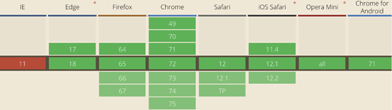
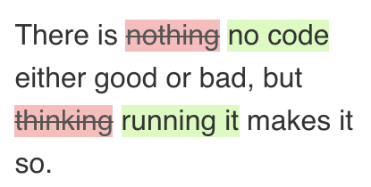

原文连接:https://www.cnblogs.com/powertoolsteam/p/11557778.html
转载请注明出处：葡萄城官网，葡萄城为开发者提供专业的开发工具、解决方案和服务，赋能开发者。
原文出处：https://blog.bitsrc.io/pure-html-widgets-for-your-web-application-c9015563af7a
在我们以往看到的页面效果中，很多效果是需要JS搭配使用的，而今天在本文中，我将介绍如何使用纯HTML打造属于自己的实用效果。
1. 折叠手风琴
使用Details和Summary标签可以创建没有JavaScript代码的可折叠手风琴。
效果：
HTML
<details>
<summary>Languages Used</summary>
<p>This page was written in HTML and CSS. The CSS was compiled from SASS. Regardless, this could all be done in plain HTML and CSS</p>
</details>
<details>
<summary>How it Works</summary>
<p>Using the sibling and checked selectors, we can determine the styling of sibling elements based on the checked state of the checkbox input element. </p>
</details>CSS
* {
font-size: 1rem;
font-family: -apple-system, BlinkMacSystemFont, "Segoe UI", Roboto, Helvetica, Arial, sans-serif;
}
details {
border: 1px solid #aaa;
border-radius: 4px;
padding: .5em .5em 0;
}
summary {
font-weight: bold;
margin: -.5em -.5em 0;
padding: .5em;
}
details[open] {
padding: .5em;
}
details[open] summary {
border-bottom: 1px solid #aaa;
margin-bottom: .5em;
}浏览器支持：
2. 进度条
该Meter和Progress 的元素标签的基础上，你可以调整属性呈现在屏幕上的进度条。进步有两个属性：max和value校准进度条，而Meter标签提供了更多的定制属性。
效果：
HTML:
<label for="upload">Upload progress:</label>
<meter id="upload" name="upload"
min="0" max="100"
low="33" high="66" optimum="80"
value="50">
at 50/100
</meter>
<hr/>
<label for="file">File progress:</label>
<progress id="file" max="100" value="70"> 70% </progress>CSS:
body {
margin: 50px;
}
label {
padding-right: 10px;
font-size: 1rem;
font-family: -apple-system, BlinkMacSystemFont, "Segoe UI", Roboto, Helvetica, Arial, sans-serif;
}浏览器支持：

3. 更多输入类型
在定义输入元素时，您要知道现代浏览器已经允许您指定足够多的输入类型了。除了你应该已经知道text，email，password，number这些类型外，还有下面的这些。
- date 将显示本机日期选择器
- datetime-local 更丰富的日期和时间选择器
- month 友好的月份选择器
- tel会让你输入一个电话号码。在移动浏览器上打开它，弹出的键盘将发生变化，同样的email也是如此。
- search 将输入文本框设置为友好的搜索样式。
效果：

HTML:
<label for="date">Enter date:</label>
<input type="date" id="date"/>
<label for="datetime">Enter date & time:</label>
<input type="datetime-local" id="datetime"/>
<label for="month">Enter month:</label>
<input type="month" id="month"/>
<label for="search">Search for:</label>
<input type="search" id="search"/>
<label for="tel">Enter Phone:</label>
<input type="tel" id="tel">CSS:
input, label {display:block; margin: 5px;}
input {margin-bottom:18px;}各种新输入类型的MDN文档非常广泛且信息量很大。此外，检查移动输入类型以了解用户在移动浏览器上时这些输入元素的键盘行为。
4. 视频和音频
video和audio元素虽然现在已经成为HTML规范的一部分，但是你一样会惊讶于你可以使用video标签在屏幕上渲染出一个体面的视频播放器。
<video controls>
<source src="https://addpipe.com/sample_vid/short.mp4"
poster="https://addpipe.com/sample_vid/poster.png">
Sorry, your browser doesn't support embedded videos.
</video视频标记中值得注意的一些属性包括：
- poster 下载视频时要显示封面的URL
- preload 是否在页面加载时预加载整个视频
- autoplay 视频是否应该在页面加载后自动播放
浏览器支持：
5. 校对文本
当你想显示历史编辑及校对的情况时，blockquote，del和ins元素标签可以派上用场了。
示例：

HTML：
<blockquote>
There is <del>nothing</del> <ins>no code</ins> either good or bad, but <del>thinking</del> <ins>running it</ins> makes it so.
</blockquote>CSS：
del {
text-decoration: line-through;
background-color: #fbb;
color: #555;
}
ins {
text-decoration: none;
background-color: #d4fcbc;
}
blockquote {
padding-left: 15px;
line-height: 30px;
border-left: 3px solid #d7d7db;
font-size: 1rem;
background: #eee;
width: 200px;
}6.更统一的引号
由于中英文引号的不同，使用<q>标记可以让您很好的解决这个问题，它可使你的内容在大多数浏览器上更一致地呈现引号。
HTML：
Don Corleone said <q cite="https://www.imdb.com/title/tt0068646/quotes/qt0361877">I'm gonna make him an offer he can't refuse. Okay? I want you to leave it all to me. Go on, go back to the party.</q></p>
<hr/>
Don Corleone said <i>"I'm gonna make him an offer he can't refuse. Okay? I want you to leave it all to me. Go on, go back to the party."</i>CSS：
body {
margin: 50px;
}
q {
font-style: italic;
color: #000000bf;
}
7. 键盘标签
<kbd>标签应该是一个少为人知的冷门标签，但这个能使用更好的方式来说明组合键的样式。
HTML：
<p>I know that <kbd>CTRL</kbd>+<kbd>C</kbd> and <kbd>CTRL</kbd>+<kbd>V</kbd> a are like the most used key combinations</p>CSS：
body {
margin: 50px;
}
kbd {
display: inline-block;
margin: 0 .1em;
padding: .1em .6em;
font-size: 11px;
line-height: 1.4;
color: #242729;
text-shadow: 0 1px 0 #FFF;
background-color: #e1e3e5;
border: 1px solid #adb3b9;
border-radius: 3px;
box-shadow: 0 1px 0 rgba(12,13,14,0.2), 0 0 0 2px #FFF inset;
white-space: nowrap;
}8.使用HTML共享代码
使用figcaption pre code标签，您可以使用纯HTML和CSS呈现出不错的代码片段。
HTML：
<figure>
<figcaption>
Defining a css <code>color</code> property for a class called 'golden'
</figcaption>
<pre>
<code>
.golden {
color: golden;
}
</code>
</pre>
</figure>CSS：
pre {
background-color: #ffbdbd;
}
这篇文章也只是抛砖引玉，也许您也有更多私藏的使用技巧，不妨也贴出来分享给大家。
另外，如果您不仅仅限于以上的效率，希望有更完整的动态功能。
例如：您希望在您的页面中加入Excel功能，可以尝试纯前端表格控件SpreadJS，再或者您希望为用户提供更完备、更高效的前端UI控件，您也不妨可以试试WimoJS。
想信她们都能为您的应用增色不少。